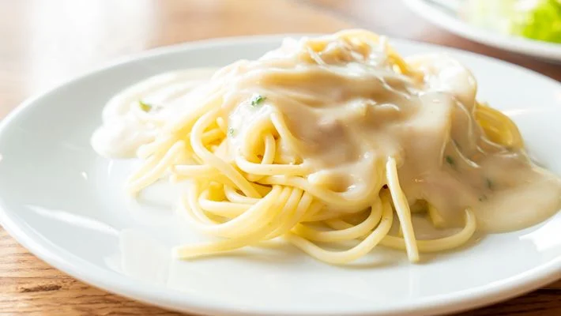

Batata Recheada
- 2 batatas médias cozidas
- sal a gosto
- 1 ovo
- 180g de queijo mussarela
- bacon frito a gosto
- 1/2 lata de creme de leite
- cebolinha a gosto
- Retire a polpa das duas batatas cozidas, deixando uma cavidade em cada uma, reserve.
- Em um recipiente, misture as polpas da batata com sal, ovo, queijo mussarela, bacon frito e creme de leite, misture bem.
- Em um tabuleiro, coloque as duas batatas e distribua em cada cavidade um pouco de queijo mussarela, a mistura das polpas, bacon frito, mais um pouco de queijo mussarela por cima, bacon e finalize com cebolinha picada a gosto.
- Leve ao forno (230° C), por cerca de 20 minutos.

Macarrão com Requeijão
- 500 g de penne cozido al dente
- 2 colheres de alho picado
- 1 lata de molho de tomate
- 200 g de requeijão
- 300 g de presunto picado
- 300 g de mussarela picada
- Queijo parmesão ralado
- Sal e pimenta a gosto
- Em uma panela aqueça o azeite e doure o alho. Junte o molho de tomate e o requeijão. Tempere com sal e pimenta.
- Deixe no fogo brando até o requeijão derreter.
- Desligue o fogo e misture a mussarela e o presunto picados.
- Em um refratário coloque o macarrão, despeje o molho e polvilhe o queijo ralado. Deixe por 20 minutos em forno pré-aquecido e sirva em seguida.

Carne de Panela de Pressão
- 1 kg de carne (acém, patinho ou lombo de porco)
- 8 cebolas grandes cortadas em rodelas
- 3 ou 4 cubos de caldo de carne
- Forre o fundo de uma panela de pressão com metade das cebolas.
- Esfarele um cubo de caldo de carne por cima das cebolas, adicione a carne, adicione outro cubo de caldo de carne e cubra com o restante das cebolas.
- Feche a panela de pressão, sem adicionar água, e deixe cozinhar por 25 minutos.
- Se preferir, adicione batatas em rodelas e deixe cozinhar por mais 10 minutos.

Mousse de Limão
- 1 lata de leite condensado
- 1 lata de creme de leite
- 1/2 xícara de suco de limão (esse suco é puro mesmo, sem água, é só espremer o limão)
- Coloque no liquidificador o creme de leite (com soro mesmo) e o leite condensado.
- Bata um pouco e depois vá acrescentando o suco do limão, aos poucos.
- Ele vai ficar bem consistente, leve à geladeira.